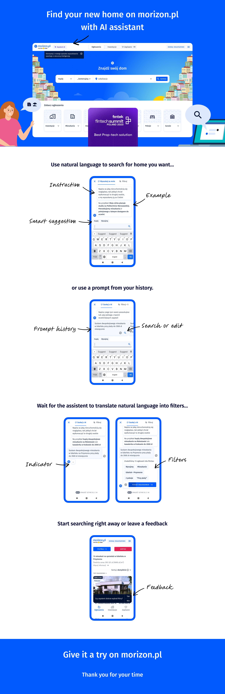

Back to story
Morizon real-estate discovery.
Morizon real-estate discovery platform with Poland's first LLM-powered natural-language property search, connecting property browsing with mortgage decisions.

Morizon real-estate discovery platform with Poland's first LLM-powered natural-language property search, connecting property browsing with mortgage decisions.
